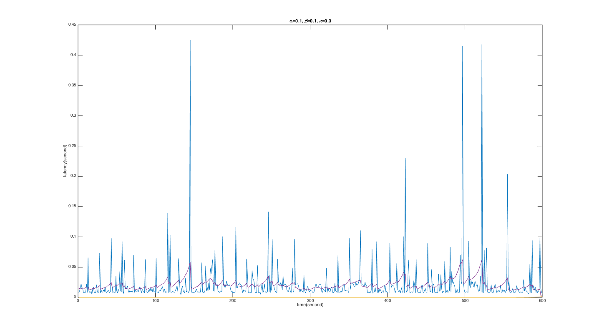

Raspberry Pi 3 Based NTP Synchronization
Course project of UCSD's CSE237B Software for Embedded System. Individual project. Spring 2017.
Works
- Implemented NTP clock synchronization mechanism between Raspberry Pi 3 and a laptop using UDP
- Estimated wireless network latency between Raspberry Pi 3 and the laptop using TCP retransmission timeout estimator
Results

The purple line in the above plot shows the smoothed wireless network latency.
Back